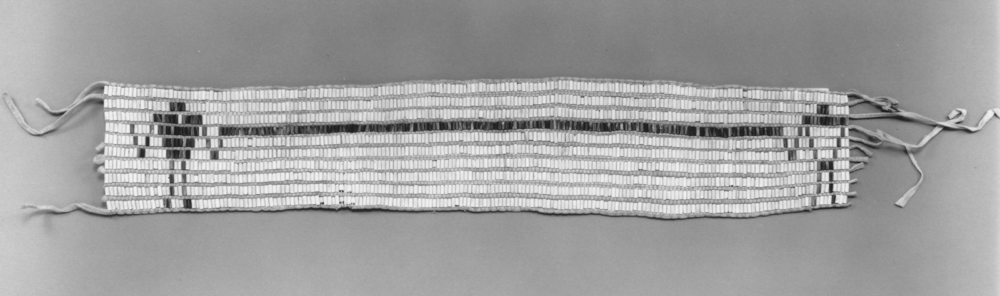
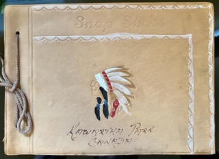

Background🔗
This project was conceived in 2021 and my participation in Hacking History (HIS496H1) gave me the opportunity to treat this idea as a serious study in Digital Humanities. Hacking History equipped with the foundational knowledge in technology, data, to begin to think, plan, and develop projects for Digital Humanities. The project is in an exploratory development phase.
Inspiration🔗
For many Canadians, the concept of reconciliation is a matter of government policy. Fortunately, the movement towards reconciliation recieves ample news coverage and we can now see businesses and institutiions introduce ways to include indigenous lives into their work and operational cultures. These are important and necessary moves, but I wonder what the 'average' Canadian can do, on a human level, to connect with thier own past and make connections with indigenous commmunities.

The Friendship Belt, or The Covenant Chain belt, represents one of the earliest treaties between the Crown and First Nations peoples and established the foundation for First Nations - Crown relationships for generations thereafter. The belt shows that the Crown is linked by a chain to the First Nations peoples of this land. The three links of the chain represent a covenant of friendship, good minds, and the peace which shall always remain between us. The covenant chain is made of silver symbolizing that the relationship will be polished from time to time to keep it from tarnishing. This was the basis of the Nation to Nation relationship between the British Crown and the First Nations who became their allies in the formation of early Canada. [Image attribution] (https://vitacollections.ca/sixnationsarchive/details.asp?ID=2687120).
Statement of Purpose🔗
As my mother and I began the painful process of sorting through my recently-deceased grandmother’s things, among the many silk scarves and countless photographs, we came across an photo album of black and white photographs of my grandmother’s summers in the Kawartha’s, a favourite haunt of my family. The album, a leather-bound with a colourful illustration of an Indigenous person in headdress adorns the cover, inside were many photographs of typical Canadian summer activities like canoeing, swimming, and relaxing.
Apart from the familial sentimentality, genealogical value, and vintage Canadiana this photo album provides, it also prompted me to think about the connection between the illustration on the cover and the contents.
With Canada now joining the exclusive club of countries who have committed genocide I wondered what is my responsibility as the ancestor of settlers and pioneers.
As I think of my grandparents and others, who didn’t know or didn’t ask or didn’t care to know, I think the greatest crime I can commit not following them by not asking or doing.
As I began to reflect on news and findings, I wondered what the responsibility of citizens, of Canadian people, do we have. My thoughts turned to the idea of responsibility as a vital component. But how do we think about responsibility. How do we envision responsibility through the education system when information, narratives, histories, are denied to us. This is how I arrived at the idea for this project.

I discovered this family photo album while I was helping my mother sort out my grandmother's posessions.
What has been completed so far?🔗
The following is a list of activities and project tasks that have been completed or are in process:
- Conducted cursory literature review
- Connected with Indigenous Scholar Pia Russell, author of Whose History? A Reconnaissance of British Columbia’s First Fifty Years of History Textbooks, 1871-1921. Pia has agreed to start a conversation with me to see how we can further work in this area.
- Connected with Heidi Bohaker, Indigenous Scholar and Digital Humanist. Professor Bohaker has agreed to meet with me to see how our interests align.
- Drafted preliminary Project Plan
- Expanded knowledge area to include a consideration of applied ethics
- Connected with staff at OISE Library and have begun preliminary primary source material research
- Developed conference/paper abstract
- Submitted applications to present my preliminary project ideas to the Critical Digital Humanities International Conference and the Centre for Ethics Undergraduate Research Conference 2022.